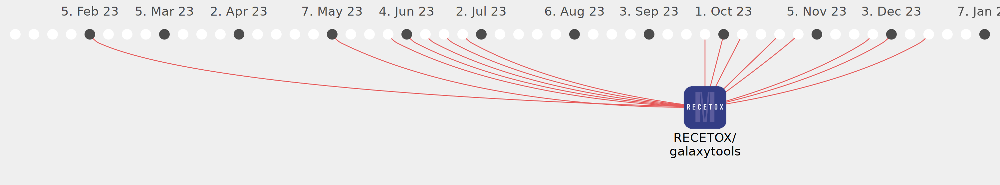

zargham-ahmad

Commits all-time: 127
Commits last year: 86

(86)
- 992f36e
- cc06717
- 98d595e
- 99aafe4
- ae59da5
- 2b99f0d
- 5c9eccc
- c3423a5
- b6ee4f9
- ae8e50f
- 074e8fa
- 0568746
- ddce76c
- 643ad68
- e3403a2
- a805393
- 4a39f07
- 6332085
- eb62759
- 68708a2
- 2a32742
- 604abd9
- dff105f
- 30edc9e
- 30e97d5
- 63002c5
- 094e250
- c9c88cd
- 2556f7d
- 7a26724
- 4c79898
- 2ada2fd
- a54098b
- 786545a
- 288aaae
- 0a908bc
- 8cd2c06
- 0a2d9df
- 775112d
- 3109271
- 35127b2
- af7e447
- e9e6239
- 1cb3efd
- 4fd563f
- 3b25dba
- 8d57749
- 6348ebe
- 3b1a6a5
- 6f2776b
- 1aeb566
- 4e3a962
- 90cae26
- 00c69d2
- a05ba59
- b7135bf
- 4cbf870
- 09f136a
- 43d0899
- fe37cf0
- 0ab3112
- 1474685
- ea3c40c
- 5f447e3
- 4821d5f
- 00a1156
- 526030b
- 5d7a071
- dbc8501
- ae86391
- 2a69cc5
- 1bcf6c1
- cbbea85
- 7ffbfbd
- 42d54a0
- 114e150
- 065b59c
- 53af14e
- a89c2d0
- d031ff2
- ef2d110
- b1ec1f1
- 433ccea
- 35ee098
- 9e579c4
- 94656ff